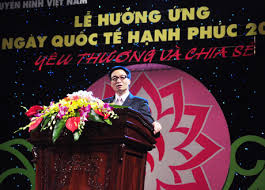

Ngày Quốc tế hạnh phúc được lấy từ ý tưởng từ Bhutan, quốc gia vốn được
đánh giá là hạnh phúc nhất thế giới dựa trên các yếu tố như sức khoẻ,
tinh thần, giáo dục, môi trường, chất lượng quản lý và mức sống của
người dân. Liên Hợp Quốc quyết định kỷ niệm ngày này theo đề xuất của
Vương quốc Bhutan, một quốc gia nhỏ bé ở khu vực Nam Á, nằm sâu trong
lục địa phía Đông dãy Himalaya.

Ngày Quốc tế Hạnh phúc còn khởi nguồn từ nhu cầu về một cách tiếp cận
tăng trưởng kinh tế cân bằng, hợp tình hợp lý hơn, nhằm thúc đẩy sự phát
triển bền vững, xóa nghèo và phấn đấu vì hạnh phúc và sự thịnh vượng cho
tất cả mọi người và xuất phát từ nguyện vọng mỗi người hãy chọn cho mình
một quan niệm đúng về hạnh phúc, quan tâm đến vấn đề cốt lõi nhất trong
sự tồn tại là làm sao tìm được thật nhiều niềm vui trong cuộc sống, làm
lan tỏa những điều tốt đẹp nhất trên khắp hành tinh xanh.

Ngày Quốc tế Hạnh phúc sau khi công bố đã được nhiều quốc gia trên thế
giới ủng hộ. Đến nay, đã có 193 quốc gia thành viên hưởng ứng và cam kết
sẽ ủng hộ ngày này bằng các nỗ lực nâng cao chất lượng cuộc sống, xây
dựng xã hội công bằng, phát triển bền vững, nhằm đem lại hạnh phúc cho
người dân. Hưởng ứng Ngày Quốc tế Hạnh phúc do Liên Hợp Quốc phát động,
ngày 26 tháng 12 năm 2013, thủ tướng Nguyễn Tấn Dũng đã ban hành Quyết
định số 2589/QĐ-TTg phê duyệt Đề án Tổ chức các hoạt động nhân Ngày Quốc
tế Hạnh phúc 20 tháng 3 hằng năm.Năm 2014, lần đầu tiên Việt Nam tổ chức
Ngày Quốc tế Hạnh phúc với chủ đề Yêu thương và chia sẻ đem thông điệp
tới mọi người hãy yêu thương và chia sẻ cùng nhau trong gia đình, trong
dòng tộc, trong mỗi cộng đồng, giữa những người bạn, người đồng chí,
trong mỗi đơn vị, cơ quan, trường học đem lại hạnh phúc cho chính bản
thân, gia đình và cộng đồng, góp phần phát triển an sinh xã hội, thực
hiện mục tiêu xây dựng gia đình no ấm, tiến bộ, hạnh phúc.

2013 Năm đầu tiên của Ngày Quốc tế Hạnh phúc được tổ chức và phát động
với Ndaba Mandela, cháu trai của cố Tổng thống Nam Phi Nelson Mandela
và Chelsea Clinton, con gái của Tổng thống Mỹ Bill Clinton và Thượng
nghị sĩ Mỹ và ứng cử viên tổng thống của đảng Dân chủ Hillary Clinton
tại hội nghị TedXTeen tại New York. Liên Hợp Quốc và Quỹ Liên Hợp Quốc
cũng đã tổ chức các nghi lễ và lễ kỷ niệm.

*hình ảnh: Ndaba Mandela
2014 Năm thứ hai của Ngày Quốc tế Hạnh phúc được tiến hành do ca sĩ
Pharrell Williams và Quỹ Liên Hợp Quốc với video âm nhạc 24 giờ đầu
tiên của thế giới với ca khúc "Happy". Công dân toàn cầu trên toàn thế
giới đã được kêu gọi để tạo video âm nhạc của riêng mình với bài hát
để tạo 24 giờ video âm nhạc toàn cầu do cộng đồng đóng góp đầu tiên.
*hình ảnh: Pharrell Williams
2015 Năm thứ ba của Ngày Quốc tế Hạnh phúc được cử hành do Pharrell
Williams, Liên Hợp Quốc và Quỹ Liên Hợp Quốc trong chiến dịch toàn cầu
khác. Pharrell Williams thực hiện một bài phát biểu tại Đại hội đồng
Liên Hợp Quốc, nơi ông tuyên bố "Hạnh phúc là quyền bẩm sinh của bạn"
và yêu cầu hành động về biến đổi khí hậu. Google đã tạo ra một trang
web, nơi đã nhận được hơn 3,5 tỷ đóng góp cảm tưởng. Google cũng đã
khởi xướng một chiến dịch mà Pharrell sẽ bật lên một cách ngẫu nhiên
và nhảy múa trong dịch vụ Google Hangouts (Hội nghị truyền hình).
*hình ảnh: Pharrell Williams